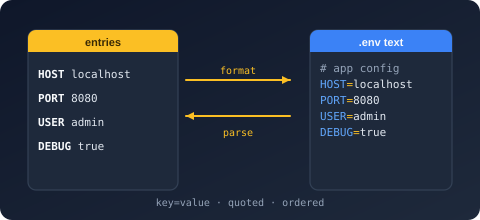

Bodu.Text.DotEnv
Bodu.Text.DotEnv reads and writes .env files - a flat object of KEY=value entries with optional export prefixes, single- and double-quoted values, and # comments - as a standalone System.Text.Json-shaped library: a forward-only ref struct reader/writer pair over UTF-8 bytes, a typed settings serializer, an export-flag-preserving mutable DOM, and a read-only document DOM. It is one of the three Bodu line formats and shares the Bodu.Text.Serialization attribute, naming-policy, and callback vocabulary with every other Bodu serializer.
Values are deliberately literal - no ${VAR} interpolation happens at parse time - and the wire is string-only, so the serializer converts scalars with InvariantCulture at the binding layer. The Web preset applies the SCREAMING_SNAKE_CASE naming policy with case-insensitive matching, so conventional APP_PORT-style keys bind onto PascalCase members without a single [PropertyName].
Part of the Text & Serialization topic.
Install
dotnet add package Bodu.Text.DotEnv
Targets net8.0 and net10.0. Depends on Bodu.Text.Serialization and Bodu.Core. Also available through the Bodu.Text.Formats umbrella package.
Headline types
| Type | Purpose |
|---|---|
| Utf8DotEnvReader / Utf8DotEnvWriter | Forward-only, allocation-free token machines, configured by DotEnvReaderOptions / DotEnvWriterOptions. |
| DotEnvSerializer | Settings POCO or Dictionary<string, string> ↔ text: Serialize / Deserialize<T> over strings, UTF-8 spans, buffer writers, and streams (with buffered async variants). |
| DotEnvSerializerOptions / DotEnvSerializerDefaults | Naming policy, case sensitivity, IncludeFields, DefaultIgnoreCondition, WriteExportPrefix; General / Web presets. |
| DotEnvNode / DotEnvObject / DotEnvValue | Mutable DOM that preserves each entry's export flag through a round trip. |
| DotEnvDocument / DotEnvElement / DotEnvProperty | Read-only, disposable document model. |
| DotEnvFormatException / DotEnvSerializationException | Malformed input (unterminated quote, missing =, with position) vs a value that cannot bind. |
A first parse and bind
using System.Text;
using Bodu.Text.DotEnv;
using Bodu.Text.DotEnv.Document;
public sealed class Settings
{
public string? AppEnv { get; set; } // APP_ENV
public int AppPort { get; set; } // APP_PORT
public string? DatabaseUrl { get; set; } // DATABASE_URL
}
const string env = "# service settings\nexport APP_ENV=production\nAPP_PORT=8080\nDATABASE_URL=\"postgres://db.example.com/app\"\n";
using (DotEnvDocument doc = DotEnvDocument.Parse(Encoding.UTF8.GetBytes(env)))
{
string url = doc.RootElement.GetProperty("DATABASE_URL").GetString(); // postgres://db.example.com/app
}
Settings settings = DotEnvSerializer.Deserialize<Settings>(env, new DotEnvSerializerOptions(DotEnvSerializerDefaults.Web));
// settings.AppEnv → "production", settings.AppPort → 8080
Where to go next
- Line formats introduction, Core concepts, and Getting started - the umbrella trio shared by all three formats.
- Using DotEnv - literal values, quoting rules, export prefixes, typed settings, the mutable DOM.
- Parser policies - the
DisallowExportPrefix/DisallowInlineCommentsknobs. - Runnable samples - the
ConfigFilessample project. - API reference - Bodu.Text.DotEnv.